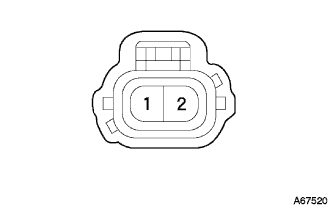
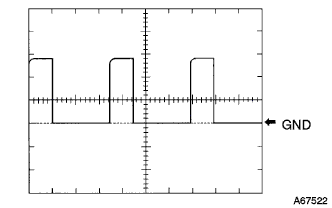
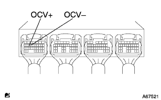

DTC P1656/39 OCV系統 |
| DTC No. | DTC検出条件
| 点検部位 |
| P1656/39 |
|
|
| 手順1 | カムシャフトタイミングオイルコントロール バルブASSY単体点検 |
参照)
|
| ||||
| OK | |
| 手順2 | ワイヤハーネスまたはコネクター点検（エンジンコントロールコンピユータ-カムシヤフトタイミングオイルコントロールバルブ） |
 |
エンジンコントロールコンピユータのコネクタAおよびカムシヤフトタイミングオイルコントロールバルブのコネクタを切り離す。
|  |
トヨタエレクトリカルテスターを使用して、エンジンコントロールコンピユータの車両側コネクタ←→カムシヤフトタイミングオイルコントロールバルブの車両側コネクタ間の導通および短絡を点検する。(端子配列は参照)
| 測定端子(端子名) エンジンコントロールコンピユータ←→カムシヤフトタイミングオイルコントロールバルブ | 基準 |
| A15(COV+)←→1(+) | 導通があり他の端子間およびボデーアース間と短絡がないこと |
| A14(OCV-)←→2(-) | 導通があり他の端子間およびボデーアース間と短絡がないこと |
|
| ||||
| OK | |
| 手順3 | エンジンコントロール コンピュータ単体点検 |
|  |
|  |
SST(TaSCAN)をエンジンコントロールコンピユータのコネクタA15(OCV+)←→A14(OCV-)端子間に接続する。(端子配列は参照)
SST(TaSCAN)をオシロスコープ機能にセットする。[セット方法については、TaSCAN取扱説明書を参照]
| 項目 | 内容 |
| 測定端子 | OCV+←→ＯＣＶ- |
| 計器セット | 5V/DIN、1ms/DIV |
| 条件 | アイドル回転時 |
|
| ||||
| OK | ||
| ||